Classic amp tone,
without the hassle.
FigAMP is a guitar amp plugin built for players, not engineers. Pick an amp, press Classic Tone, and play. Eight classic amp voices that respond to your pick like the real thing, studio console preamps, a compressor pedal, matched cabinets, delay and room, all in one window.
Mac (Apple Silicon and Intel) and Windows · AU, VST3 and standalone app
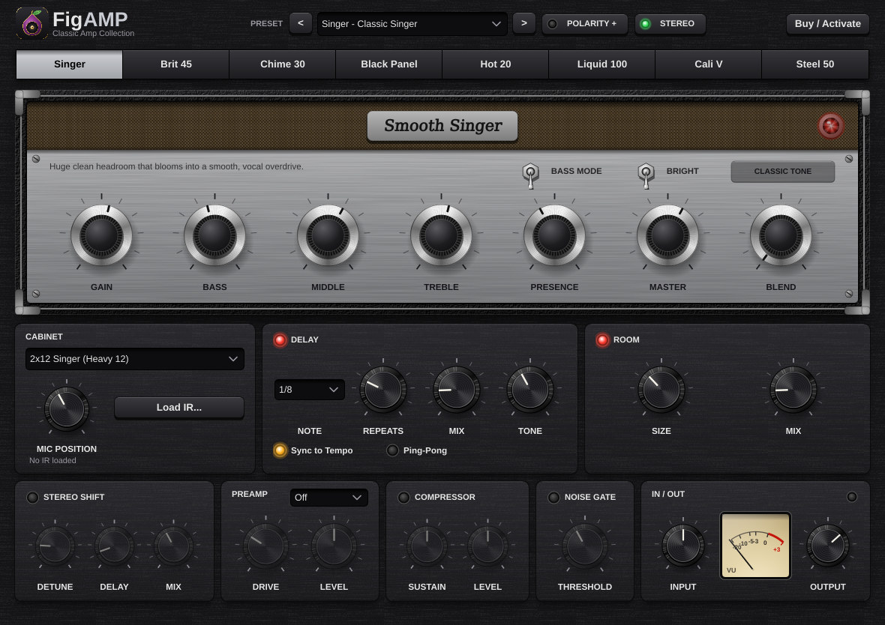
Eight amps, one sweet spot each
Each amp is modelled from its circuit, from the gain stages to the tone stack and the power amp, and since 1.3 the tubes respond to how hard you play: dig in and they bloom and squish, roll your guitar volume back and they clean up. Every amp has a Classic Tone button that loads its sweet spot with a matched cabinet, and since 1.4 each one looks the part, with its own tolex, grille cloth, control panel and knobs.
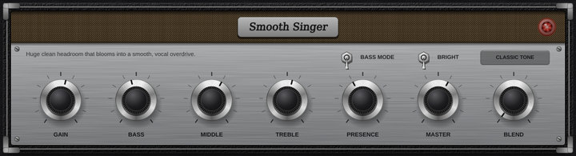
Singer
Huge clean headroom that blooms into a smooth, vocal overdrive.
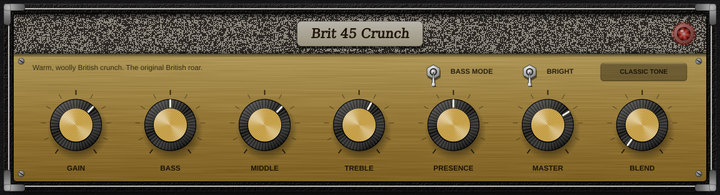
Brit 45
Warm, woolly crunch from the amp that started British rock.
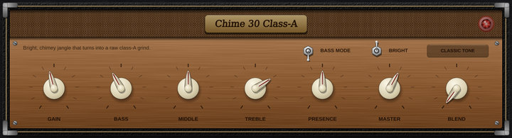
Chime 30
Jangling cleans and raw, chiming class-A grind.
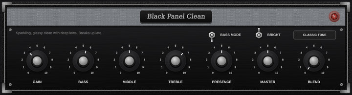
Black Panel
Glassy cleans, deep lows and late, sweet breakup.
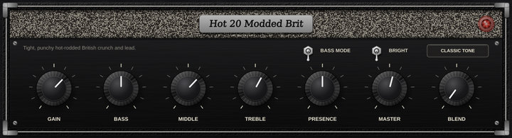
Hot 20
Tight, modded British crunch and singing lead.
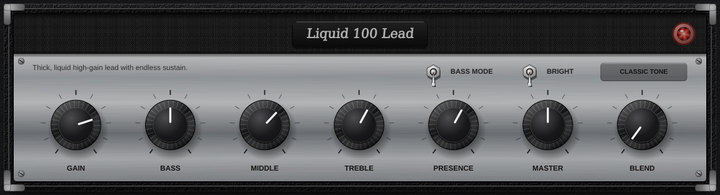
Liquid 100
Thick, liquid lead tone that sustains for days.
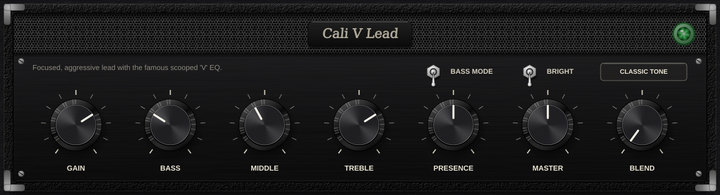
Cali V
Tight, focused lead with the famous "V" graphic EQ.
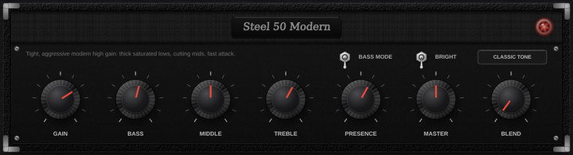
Steel 50
Tight, aggressive modern high gain: thick saturated lows, cutting mids, fast attack. New in 1.3
A whole studio chain
- Touch-sensitive tube stages and power amp. The stages shift their bias when you dig in and recover as the note rings, and the class-AB power amp sags, saturates its transformer and leans on the speaker harder as you turn it up. New in 1.3
- Input level and VU meter. An INPUT knob with a level light matches FigAMP to your interface, so every preset hits the amp the way it was designed to, and a needle VU meter shows what leaves the plugin. New in 1.3
- Bass Mode and Blend. One switch opens up the deep lows in every amp and cab for bass guitar, and the Blend knob mixes your clean DI back in under the amp, already lined up in time and phase. New in 1.3.1
- Console preamps. Four studio preamp flavours in front of the amp: Brit 73, NY 312, Brit 4K and London A.
- Cabinets. Six matched guitar cabinets and two bass cabinets (4x10 and 1x15) with a mic position control, or load your own impulse responses. Bass cabs new in 1.3.1
- Delay. Syncs to your session tempo, with warm, darkening repeats and ping-pong.
- Room. From a small studio room to a big hall.
- Compressor. A pedal-style compressor in front of the amp, with Sustain and Level, for even picking and longer sustain.
- Stereo Shift. A detune doubler for wide, thick rhythm parts.
- Noise gate, Stereo/Mono and Polarity switches. Quiet high gain, the right width for any track, and a polarity flip for blending with a DI or a second amp.
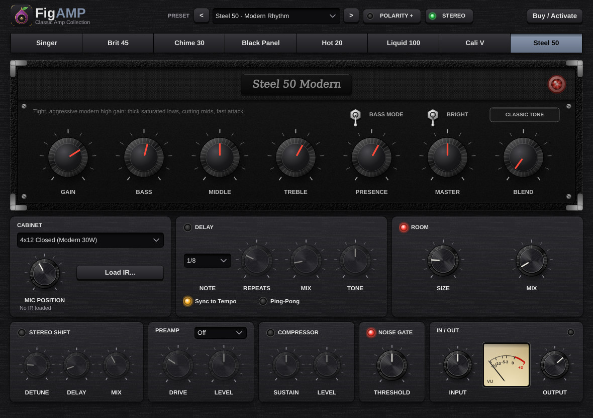
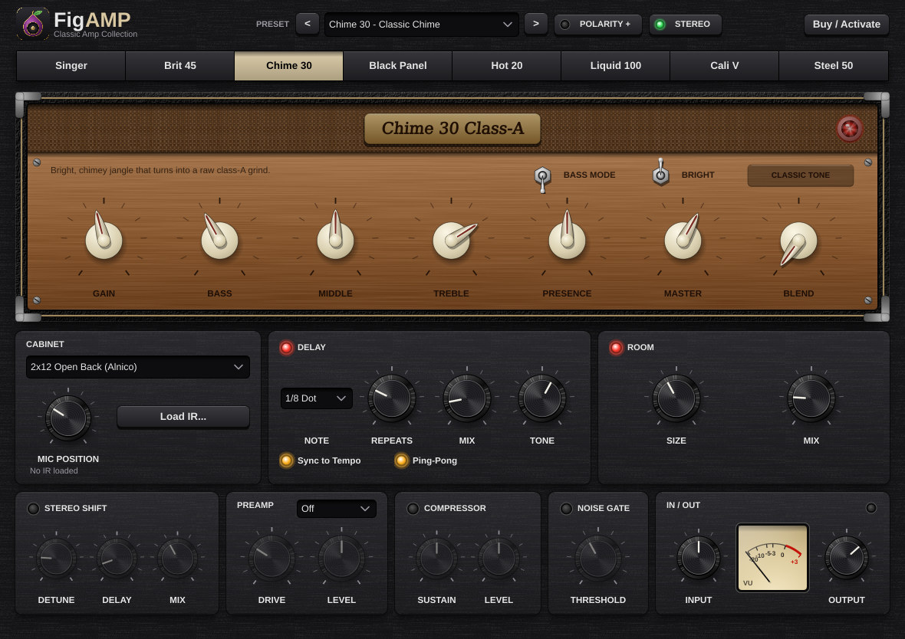
Made to be easy
- An amp head for every amp. Each amp has its own classic-style faceplate and knobs, so you always know which one you're playing, with metal toggle switches and lit status lights. New in 1.4
- 34 factory presets to start from, grouped by amp in the Preset menu, including a bass preset for every amp. Bass presets new in 1.3.1
- Save your own presets. Name a sound once and it's in the Preset menu under My presets, in the plugin and the app alike.
- Level-matched amps, so switching never jumps in volume.
- Smooth high gain with no fizz, thanks to oversampled processing.
- Plain-English tooltips on every knob.
- Works in your DAW: LUNA, Logic Pro, Ableton Live, Reaper, Cubase, Studio One, FL Studio and more.
Now for bass, too
Since version 1.3.1, FigAMP has everything a bass player needs to get real amp grit without losing the low end.
- Bass Mode. Next to the Bright switch. It lets a bass guitar's deepest notes (down to a low B) through every amp and cabinet. New in 1.3.1
- Blend. Mixes your clean DI back in under the amp, so the bottom stays solid while the amp adds growl. The two are lined up inside the plugin, so nothing goes thin or hollow. It works on guitar too, for a parallel clean sound. New in 1.3.1
- Two bass cabinets. A punchy 4x10 and a deep, round 1x15. New in 1.3.1
- A bass preset for every amp, from a clean, thumping Black Panel to a Steel 50 metal crunch. New in 1.3.1
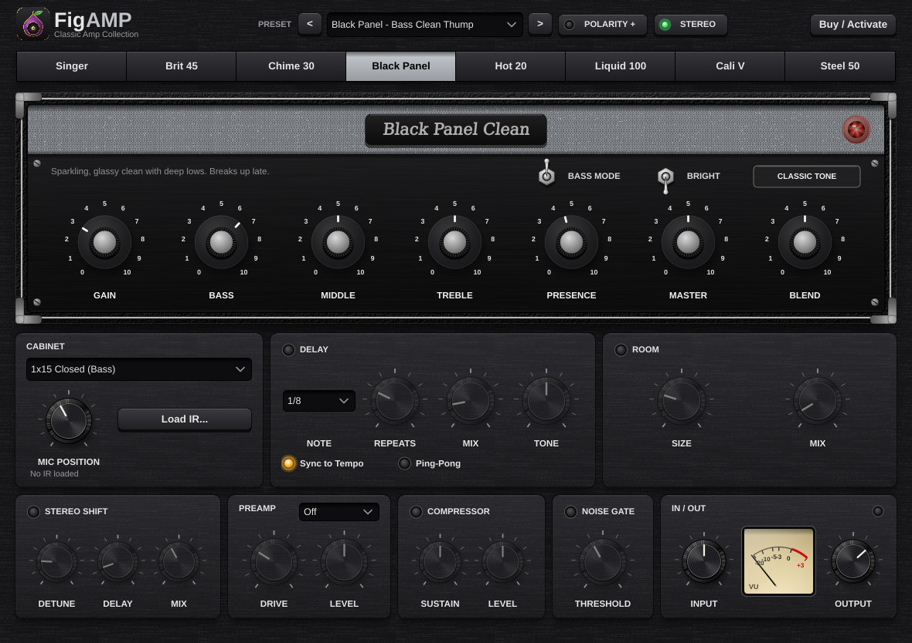
Pair it with FigGutEQ
FigGutEQ is the guitar-only EQ built to sit next to FigAMP: eight bands named for where a guitar lives, Pick Attack, Tuning Lock and 18 presets voiced for before and after the amp. Zero latency.
Meet FigGutEQ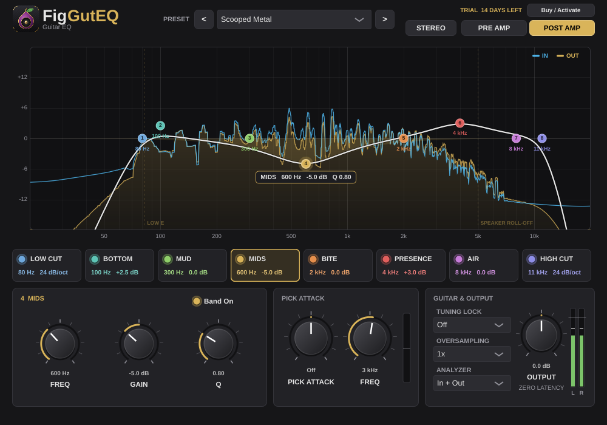
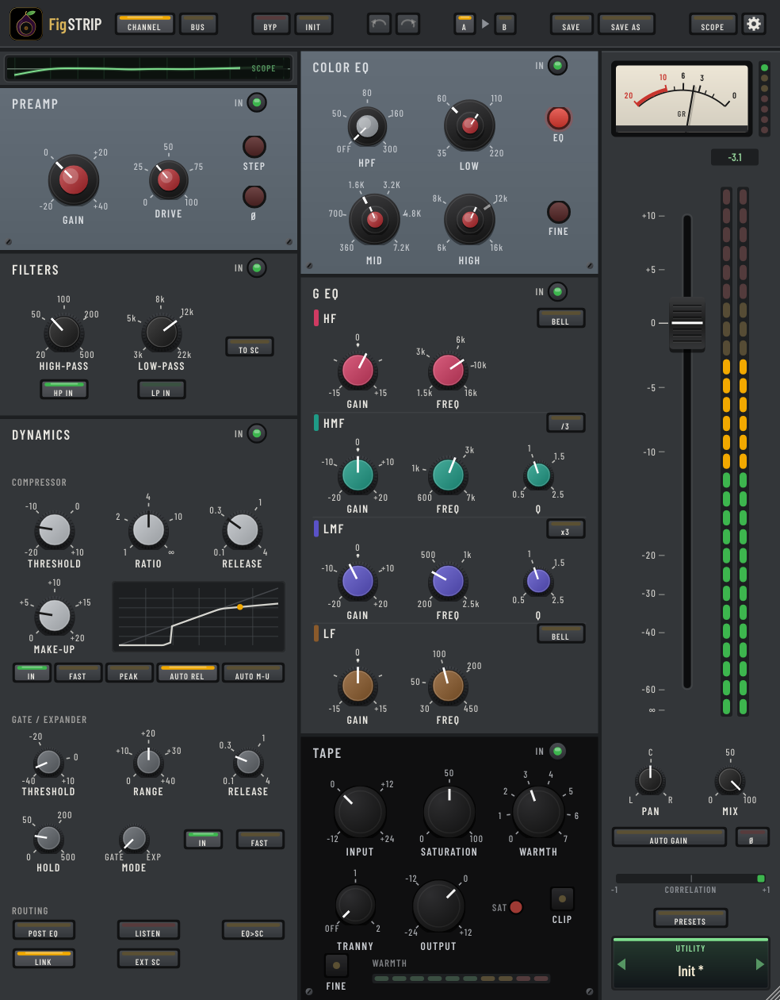
Meet FigSTRIP
FigSTRIP is a complete channel strip for every track in your mix: preamp, filters, dynamics, two EQs and tape in any order, plus a Bus mode with its own glue compressor. 32 factory presets for vocals, drums, bass, guitar, keys and buses.
Meet FigSTRIPGet FigAMP
One-time purchase. Yours to keep.
Mac
macOS 11 or later, Apple Silicon or Intel. Audio Unit, VST3 and standalone app.
Windows
Windows 10 or 11, 64-bit. VST3 and standalone app.
Licence
Activate on your own computers with your Fig Pro Audio account. The trial is fully featured for 14 days.